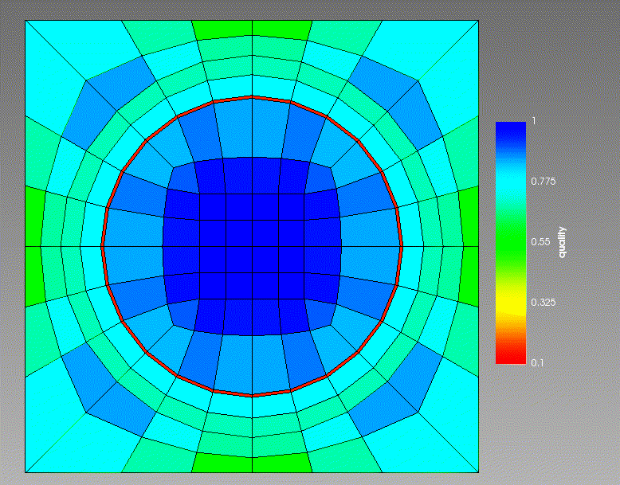

- inputThe mesh we want to smooth.
C++ Type:MeshGeneratorName
Controllable:No
Description:The mesh we want to smooth.
SmoothMeshGenerator
Utilizes the specified smoothing algorithm to attempt to improve mesh quality.
The SmoothMeshGenerator supports two mesh-smoothing algorithms, which are described below.
Laplace Algorithm
The Laplace smoothing algorithm utilizes a classical Laplacian smoother that iteratively relocates interior nodes to the average of their neighbors. It supports 1D/2D/3D meshes and tries to preserve exterior boundaries by fixing boundary nodes in place. Subdomain boundaries are not preserved. This implementation currently requires a replicated mesh.
Variational Algorithm
The variational smoothing algorithm is a Newton-based variational optimizer that minimizes a mixed distortion–dilation energy. It supports 1D/2D/3D meshes, preserves exterior boundaries by constraining nodes, can optionally preserve subdomain (block) boundaries, and can untangle some tangled meshes before smoothing. Exterior/subdomain boundaries are preserved by only allowing node movement that leaves the domain unchanged. Internally it builds a libMesh system that assembles the gradient (residual) and analytic Hessian (jacobian) of the energy and solves to a stationary point.
Mathematical Formulation
The Variational Mesh Smoother minimizes a distortion–dilation energy functional, , originally proposed by Branets (2005):
where:
is the vector of nodal coordinates
is the spatially-dependent jacobian matrix of the target-to-physical element mapping in element
is the spatially-dependent distortion-dilation energy density
is the target element corresponding to physical element
is the target space coordinate
The relationship between the target and reference elements is discussed below in the Notes & Limitations section. Note that for each element, integration is over the target space, not the physical space. Minimization is achieved using a damped Newton method with analytically derived gradient and Hessian of .
For each mesh element, the local energy density is
where:
is the dilation weight (
dilation_weightin input), penalizes volumetric dilation from the target element
, penalizes shape distortion from the target element
The distortion metric is
and the dilation metric is
Definitions:
| Symbol | Meaning |
|---|---|
| spatial dimension of the mesh (1, 2, or 3) | |
| jacobian determinant of the target-to-physical element mapping | |
| trace of the specified matrix | |
| reference (i.e., desired) , or "volume" for each element | |
| smooth barrier ensuring well-defined metrics for degenerate or folded elements (i.e., ) | |
| small nonzero regularization constant |
Notes & Limitations
Target Elements
The target element defines the "ideal" shape for a given element type. For some element types, the target element is the same as the reference element used by libMesh. For other types, the target element differs from the reference element. This is reflected in the table below.
| Element Type | Reference Element | Target Element |
|---|---|---|
| EDGE | line | line |
| TRI | right triangle | equilateral triangle |
| Polygon | regular polygon | regular polygon |
| QUAD | square | square |
| PRISM | right triangular base | equilateral triangular base, equal face areas |
| HEX | cube | cube |
| PYRAMID | square base, isosceles triangular sides | square base, equilateral triangular sides |
| TET | right tet | regular tet |
| Polyhedron | not supported | not supported |
Reference Volume ()
The term reference "volume" is a bit misleading. A more descriptive, albeit longer, term is "reference target-to-physical jacobian determinant". Basically, is the jacobian determinant that we want the smoother to push our mesh elements towards. The term "volume" is used here because the jacobian determinant is proportional to the volume of an element. When a given mesh element has the element is considered to be "dilated" from an element with
The reference volume is automatically calculated as the volumetric average of for each element, averaged over the number of elements in the mesh:
Element Order
The variational smoother rejects mixed-order meshes; all active elements must share the same default order. Higher-order element types are supported.
Untangling
The mesh is considered tangled if, at any quadrature point, . If the mesh is initially tangled, the variational smoother runs an untangling stage using only the distortion term (temporarily sets the dilation weight to 0), then a smoothing stage with the requested weights. Not all tangled meshes can be untangled. The barrier term behaves like for , is nonzero at , and asymptotes to 0 as approaches . The use of this term in place of in denominators allows the smoother to untangle meshes with degenerate/folded elements.
Once the mesh has been untangled, is set to zero to prevent re-tangling during the smoothing solve.
Optimal Solutions
It can be shown that, for the smoothing solve, when and , the distortion metric is minimized by any constant-scaled special orthogonal matrix such that
The implication of this is that the distortion metric is minimized by a mesh element that is a scaled rotation of the target element. This makes sense because the target element is our definition of the "ideal" smooth element shape.
For untangled meshes, the dilation metric simplifies to
It can be shown that the dilation metric is minimized by any such that .
Boundary/Subdomain Control
Geometric constraints are automatically detected and applied to boundary nodes; if preserve_subdomain_boundaries = true, nodes along interfaces of differing block IDs are likewise constrained so subdomain boundaries do not drift. Boundary/subdomain interface nodes are allowed to slide along boundaries/interfaces, so long as those surfaces are linear (e.g., a line in 2D meshes or a plane in 3D meshes). No action is necessary to enable sliding boundary nodes as they are automatically detected.
If the surfaces are not linear, the boundary/subdomain nodes are constrained (i.e., fixed) to their original location. It has been observed in some cases that fixing boundary nodes on nonlinear boundaries significantly restricts the space of optimally smooth solutions. As a result, the original mesh may not change significantly. This is because fixing boundary nodes reduces the space of possible smooth boundary elements. These restrictions then propagate into the mesh interior. In the future, it will be useful to allow boundary nodes to slide along nonlinear boundaries. This is not currently possible because libMesh does not yet support nonlinear constraints.
For further theoretical background, see: Branets (2005)
References
- Larisa Vladimirovna Branets.
A Variational Grid Optimization Method Based on a Local Cell Quality Metric.
Ph.D. dissertation, The University of Texas at Austin, Austin, Texas, August 2005.
URL: https://repositories.lib.utexas.edu/items/a4ec528e-1f03-4534-84ab-338e31e89e55.[Export]
Examples
Example 1 — Laplacian smoothing
The iterations parameter controls the number of smoothing steps to do. Each smoothing step will iterate the mesh toward the “true” smoothed mesh (as measured by the Laplacian smoother). After a few iterations the mesh typically reaches a steady state.
As an example, here is an original mesh going through 12 iterations of this smoother:

Figure 1: 12 iterations of Laplacian smoothing. Coloring is by element quality (higher is better).
Example 2 — Variational smoothing (fixed boundary nodes)
Here is an example of the variational smoother applied to a mesh with 3 subdomains and nonlinear boundaries. Note that the locations of the (subdomain) boundary nodes do not change.
[Mesh<<<{"href": "../../syntax/Mesh/index.html"}>>>]
[fmg]
type = FileMeshGenerator<<<{"description": "Read a mesh from a file.", "href": "FileMeshGenerator.html"}>>>
file<<<{"description": "The filename to read."}>>> = concentric_circle_mesh_in.e
[]
[smooth]
type = SmoothMeshGenerator<<<{"description": "Utilizes the specified smoothing algorithm to attempt to improve mesh quality.", "href": "SmoothMeshGenerator.html"}>>>
input<<<{"description": "The mesh we want to smooth."}>>> = fmg
algorithm<<<{"description": "The smoothing algorithm to use."}>>> = variational
[]
[]
Figure 2: Variational smoother applied to mesh with nonlinear boundary. The original mesh is shown on the left and the smoothed mesh is shown on the right.
Example 3 — Variational smoothing (sliding boundary nodes)
Here is an example of the variational smoother applied to a mesh with 2 subdomains and linear boundaries. Note that while the locations of the (subdomain) boundary nodes change, these boundaries are still preserved.
[Mesh<<<{"href": "../../syntax/Mesh/index.html"}>>>]
[gmg]
type = GeneratedMeshGenerator<<<{"description": "Create a line, square, or cube mesh with uniformly spaced or biased elements.", "href": "GeneratedMeshGenerator.html"}>>>
dim<<<{"description": "The dimension of the mesh to be generated"}>>> = 2
nx<<<{"description": "Number of elements in the X direction"}>>> = 10
ny<<<{"description": "Number of elements in the Y direction"}>>> = 10
bias_x<<<{"description": "The amount by which to grow (or shrink) the cells in the x-direction."}>>> = 1.4
bias_y<<<{"description": "The amount by which to grow (or shrink) the cells in the y-direction."}>>> = 1.4
elem_type<<<{"description": "The type of element from libMesh to generate (default: linear element for requested dimension)"}>>> = TRI3
[]
[add_block]
type = ParsedSubdomainMeshGenerator<<<{"description": "Uses a parsed expression (`combinatorial_geometry`) to determine if an element (via its centroid) is inside the region defined by the expression and assigns a new block ID.", "href": "ParsedSubdomainMeshGenerator.html"}>>>
input<<<{"description": "The mesh we want to modify"}>>> = gmg
combinatorial_geometry<<<{"description": "Function expression encoding a combinatorial geometry"}>>> = 'x > 0.35 & y > 0.35 & y < 0.7'
block_id<<<{"description": "Subdomain id to set for inside of the combinatorial"}>>> = 1
[]
[smooth]
type = SmoothMeshGenerator<<<{"description": "Utilizes the specified smoothing algorithm to attempt to improve mesh quality.", "href": "SmoothMeshGenerator.html"}>>>
input<<<{"description": "The mesh we want to smooth."}>>> = add_block
algorithm<<<{"description": "The smoothing algorithm to use."}>>> = variational
[]
[]
Figure 3: Original mesh.

Figure 4: Variationally smoothed mesh.
Input Parameters
- absolute_residual_tolerance1e-12Variational algorithm only: solver absolute residual tolerance.
Default:1e-12
C++ Type:Real
Unit:(no unit assumed)
Controllable:No
Description:Variational algorithm only: solver absolute residual tolerance.
- algorithmvariationalThe smoothing algorithm to use.
Default:variational
C++ Type:MooseEnum
Controllable:No
Description:The smoothing algorithm to use.
- dilation_weight0.5Variational algorithm only: the weight of the dilation metric. The distortion metric is given weight 1 - dilation_weight.
Default:0.5
C++ Type:Real
Unit:(no unit assumed)
Range:dilation_weight >= 0.0 & dilation_weight <= 1.0
Controllable:No
Description:Variational algorithm only: the weight of the dilation metric. The distortion metric is given weight 1 - dilation_weight.
- iterations1Laplace algorithm only: the number of smoothing iterations to do.
Default:1
C++ Type:unsigned int
Controllable:No
Description:Laplace algorithm only: the number of smoothing iterations to do.
- preserve_subdomain_boundariesTrueVariational algorithm only: whether the input mesh's subdomain boundaries should be preserved during the smoothing process.
Default:True
C++ Type:bool
Controllable:No
Description:Variational algorithm only: whether the input mesh's subdomain boundaries should be preserved during the smoothing process.
- relative_residual_tolerance1e-12Variational algorithm only: solver relative residual tolerance.
Default:1e-12
C++ Type:Real
Unit:(no unit assumed)
Controllable:No
Description:Variational algorithm only: solver relative residual tolerance.
- verbosity1Variational algorithm only: verbosity level between 0 and 100.
Default:1
C++ Type:unsigned int
Range:0 <= verbosity <= 100
Controllable:No
Description:Variational algorithm only: verbosity level between 0 and 100.
Optional Parameters
- enableTrueSet the enabled status of the MooseObject.
Default:True
C++ Type:bool
Controllable:No
Description:Set the enabled status of the MooseObject.
- save_with_nameKeep the mesh from this mesh generator in memory with the name specified
C++ Type:std::string
Controllable:No
Description:Keep the mesh from this mesh generator in memory with the name specified
Advanced Parameters
- nemesisFalseWhether or not to output the mesh file in the nemesisformat (only if output = true)
Default:False
C++ Type:bool
Controllable:No
Description:Whether or not to output the mesh file in the nemesisformat (only if output = true)
- outputFalseWhether or not to output the mesh file after generating the mesh
Default:False
C++ Type:bool
Controllable:No
Description:Whether or not to output the mesh file after generating the mesh
- show_infoFalseWhether or not to show mesh info after generating the mesh (bounding box, element types, sidesets, nodesets, subdomains, etc)
Default:False
C++ Type:bool
Controllable:No
Description:Whether or not to show mesh info after generating the mesh (bounding box, element types, sidesets, nodesets, subdomains, etc)